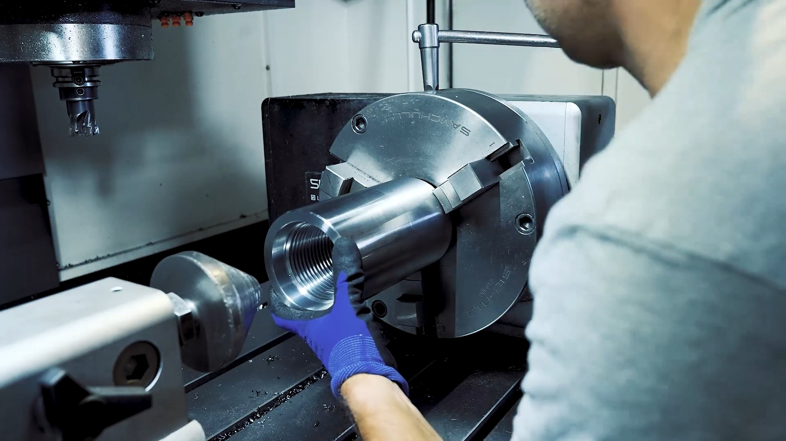

[01]
Produzione interna e lavorazioni CNC
Seguiamo direttamente le principali fasi di lavorazione: taglio, tornitura, foratura, fresatura, rettifica, stozzatura, indurimento superficiale, saldatura, frizionatura e induzione. L’impiego di macchine CNC ci permette di gestire i processi con attenzione e di intervenire quando sono richieste configurazioni specifiche.
